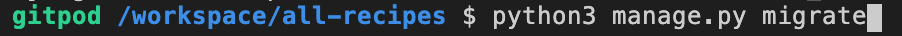

{% endblock %}
{% block header %}
{% endblock %}
{% block header %}
Installing Django
pip 'pip install packages' is used to install Django. Pip is widely accepted as the industry-standard tool for installing python packages.
Step 1
In the terminal use 'pip3 install django' - the 3 is used, so that it is installed for python version 3.
If you ever need to check what version of python you are using use 'python --version' in the terminal.
Step 2
After installing Django. Use the django-admin function to start a new django project.
For this example it will be called all_recipes.
The dot at the end will tell django we want to create a project in the current directory.
Once the new project has been installed, two new items will appear in the file explorer.
The first one is the project name folder i.e all_recipes, which is the project directory.
The second one is manage.py - this is django management utility, which we will need throughout the project.
__init__.py - This tells our project this is a file we can import from.
settings.py - Contains global settings for entire django project. I.e. Where our HTML templates are located and which database we're going to connect to
urls.py - Containes routing information that allows users to type a specific URL into their address bar.
wsgi.py - Contains code that allows our web server to communicate with our Python application.
To run the django app:
After following the first two steps, your Django app will be connected.
To run the app use, python3 manage.py runserver. If all is working correctly the following webpage will show.
Step 3 - initial migration
When you first start a new django project, you have run 'python3 manage.py migrate'. Migrations apply changes to the model to the database. To learn more about migrations, go to the migrations section.
Step 4 - Create a superuser
In order to log in to the admin a 'superuser' needs to be created.
Run python3 manage.py createsuperuser in the terminal, it will then prompt you for a username, email and password,
these will be your log in credentials.
Having a superuser allows backend access to CRUD functionality - which is helpful in development and testing.